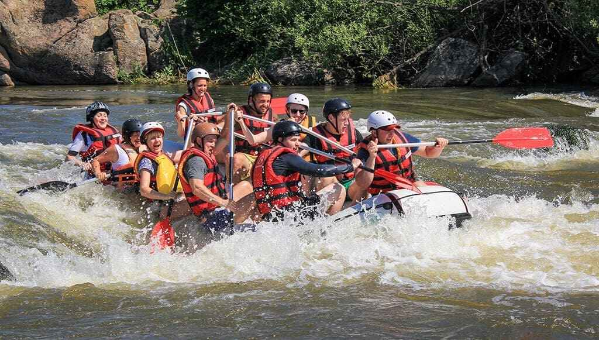

At White Water Rafting, we believe adventure should be accessible, exhilarating, and unforgettable. Our mission is to guide every paddler, whether a first-timer or a seasoned rafter, safely through the raw power of free-flowing rivers, fostering respect for nature, teamwork on the water, and the thrill of the ride. We are committed to sustainable river tourism, expert guidance, and creating memories that last long after the current has passed.

White Water Rafting Company
History
White Water Rafting was founded over two decades ago by a small group of river guides who wanted to share their love of the outdoors with others. What began as a modest operation with a single raft and a handful of local trips has grown into a trusted name in adventure tourism, known for expert guiding, safety-first practices, and unforgettable experiences on some of the region's most thrilling rivers. Through the years, we've welcomed thousands of paddlers, from wide-eyed beginners to adrenaline-seeking veterans, and remain committed to the same passion for the river that started it all.